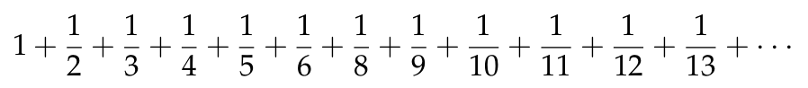
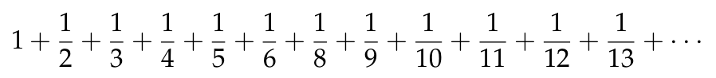

Partiendo de los 5 primeros números primos y calculando el valor absoluto de la diferencia de cada dos números consecutivos hasta quedarse con un único número se obtiene la siguiente tabla:
2, 3, 5, 7, 11
1, 2, 2, 4
1, 0, 2
1, 2
1
Se observa que todas las filas, salvo la inicial, comienzan con el número 1.
Repitiendo el proceso pero empezando con los 8 primeros números primos se obtiene la siguiente tabla:
2, 3, 5, 7, 11, 13, 17, 19
1, 2, 2, 4, 2, 4, 2
1, 0, 2, 2, 2, 2
1, 2, 0, 0, 0
1, 2, 0, 0
1, 2, 0
1, 2
1
Se observa que, de nuevo, todas las filas, salvo la inicial, comienza con el número 1.
La conjetura de Gilbreath afirma que si escribimos la sucesión de números primos completa y después construimos las correspondientes sucesiones formadas por el valor absoluto de la resta de cada pareja de números consecutivos, entonces todas esas filas que obtenemos comienzan siempre por 1.
El objetivo de este ejercicio es comprobar experimentalmente dicha conjetura.
Para la representación, usaremos la simétrica de la que hemos comentado anteriormente; es decir,
2
3, 1
5, 2, 1
7, 2, 0, 1
11, 4, 2, 2, 1
13, 2, 2, 0, 2, 1
17, 4, 2, 0, 0, 2, 1
19, 2, 2, 0, 0, 0, 2, 1
en la que la primera columna son los números primos y el elemento de la fila i y columna j (con i, j > 1) es el valor absoluto de la diferencia de los elementos (i,j-1) e (i-1,j-1).
Definir las siguientes funciones
siguiente :: Integer -> [Integer] -> [Integer]
triangulo :: [[Integer]]
conjetura_Gilbreath :: Int -> Bool
tales que
- (siguiente x ys) es la línea siguiente de la ys que empieza por x en la tabla de Gilbreath; es decir, si ys es [y1,y2,...,yn], entonces (siguiente x ys) es [x,|y1-x|,|y2-|y1-x||,...]. Por ejemplo,
siguiente 7 [5,2,1] == [7,2,0,1]
siguiente 29 [23,4,2,0,0,0,0,2,1] == [29,6,2,0,0,0,0,0,2,1]
- triangulo es el triángulo de Gilbreath. Por ejemplo,
λ> take 10 triangulo
[[ 2],
[ 3,1],
[ 5,2,1],
[ 7,2,0,1],
[11,4,2,2,1],
[13,2,2,0,2,1],
[17,4,2,0,0,2,1],
[19,2,2,0,0,0,2,1],
[23,4,2,0,0,0,0,2,1],
[29,6,2,0,0,0,0,0,2,1]]
- (conjeturaGilbreath n) se verifica si se cumple la conjetura de Gilbreath para los n primeros números primos; es decir, en el triángulo de Gilbreath cuya primera columna son los n primeros números primos, todas las filas a partir de la segunda terminan en 1. Por ejemplo,
λ> conjeturaGilbreath 1000
True
Leer más…

 (grafica [10..100]) dibuja
(grafica [10..100]) dibuja
 y (grafica [100..200]) dibuja
y (grafica [100..200]) dibuja

 y se obtiene a partir de la serie armónica

modificando sólo el signo de algunos términos según el siguiente criterio:
y se obtiene a partir de la serie armónica

modificando sólo el signo de algunos términos según el siguiente criterio:

 donde la línea morada corresponde a la aproximación de Gregory-Leibniz y la verde a la de Beeler.
donde la línea morada corresponde a la aproximación de Gregory-Leibniz y la verde a la de Beeler.